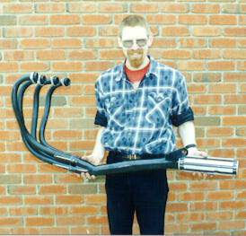
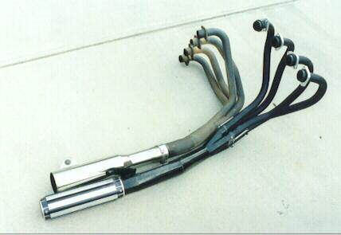

The quickest and easiest way to improve your RC17’s performance is to ditch the standard exhaust and fit an after-market one.
One exhaust that will bolt straight on with minimum problems is the Motad NETA. Nigel has one, and Mr_T had one on his RC17, and it gives a higher top-end than the stock system without sacrificing mid-range power or the exhaust tone.
Another system that I know is available (although you’ll have to hunt for it) is a race pipe from Moriwaki in Japan. I managed to get one from Nigel (Team Member #4) – it came to Nigel via Japan. So, I must have the world’s most travelled exhaust system – Japan to England to Australia.

A very happy Viking!
My Moriwaki is now third-hand, and I have it on good authority that all the previous owners loved the sound of it, and the added power it gave. I love it too!
The first time I went for a ride with it on, I was wishing for red traffic lights, simply so I could listen to the exhaust note as I accelerated away.

A comparison with the MAC system
Since then, I’ve done a track day with (again) a noise limit, and I had no problem with the pipe. Legally (in Victoria, Australia, anyway) we’re allowed up to a 100dB noise limit. Modern bikes are stuck with something like a 94dB limit.
Mr_T’s comments:
- The Motad NETA is designed to produce a stock noise level. The ‘Two Wheels’ magazine tested one on a Kawasaki GPz750 in 1984, and found that it was 0.5dB under the 94dB noise limit. The noise limit has been tightened since then, but older bikes only have to meet the old limit.
- Also, the NETA reduced ground clearance on the right hand side of the bike, as the collector pipes are lower than the belly fairing. This may lead to better oil cooling, as the stock exhaust passes very close to the sump. With a stock exhaust it is possible to scrape the belly fairing on the ground when cornering hard. With a NETA system installed, you scrape that instead.
- One other point is that the No. 3 header pipe has to be moved to remove the oil filter.
Viking’s comments on his MAC system:
- Compared to stock pipes, the MAC has larger headers, and gives more top-end power, but at the cost of low and mid-range power.
- The chrome on the muffler is very thick, and polishes up well. I managed to put some very deep scratches in it, but there is still no sign of the steel underneath beginning to rust.
- The exhaust note is much higher in pitch, rather shrill and much, much louder when compared to the stock system.
- I reduced the noise level by pulling the muffler apart and putting two rolls of 1/2” chicken wire mesh between the baffle plates. I also placed a tightly rolled ‘plug’ of mesh inside the muffler, before the baffles. When I moved the ‘plug’ out of the muffler and into the collector pipe, the exhaust note deepened noticably.
- As with Mr_T’s NETA system, the MAC hangs lower than the stock system. Ground clearance is reduced by about an inch, so be careful when riding up or down curbs. I have managed to scrape the collector pipe whilst riding.
- I’ve taken the bike on several track days with a rigidly enforced noise limit, and it passed comfortably. It seems that the chicken mesh baffles lower the exhaust tone, and also seems to restore some of the lost mid-range power.
Viking’s comments on the Moriwaki system:
- What can I say? I love it!
- The tone is much better than the MAC, and a fair bit quieter
- Ground clerance is still smaller than stock, but that’s only by a small amount
- The header pipes are smaller than on the MAC by a noticable amount, but the more sinuous curve probably gives a better gas flow.
- Power-wise, I got 8hp more in the mid-range, but no more at the top-end. At the bottom-end, the power curve was even worse than the MAC’s. Probably due to the smaller header pipes. Like all things exhaust oriented, it’s a matter of win some, lose some.
- It’s the only exhaust system I have ever seen that has cooling fins on the muffler!! Those silver stripes down the muffler are actually ‘T’ shaped fins that stick out from the muffler body.